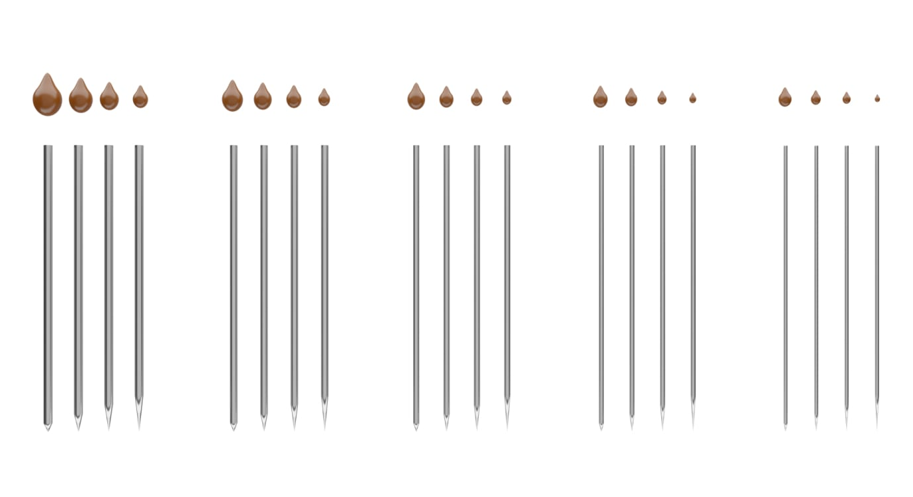
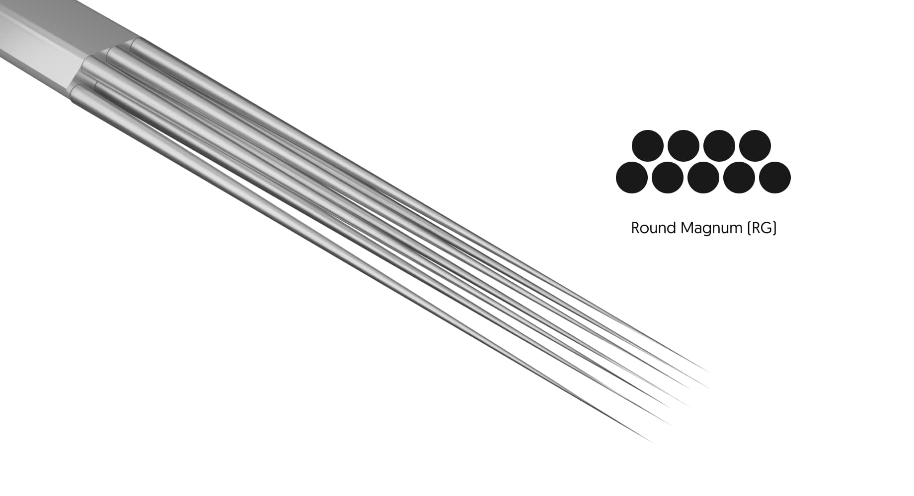

PIXEL offers an advanced PMU needle line for skilled professionals. Our large selection of sizes, tapers, configurations and textures lets you customize your needle to perform any type of permanent makeup procedure.
PIXEL offers an advanced PMU needle line for skilled professionals. Our large selection of sizes, tapers, configurations and textures lets you customize your needle to perform any type of permanent makeup procedure.
A needle is defined by its diameter, the sharpness of the point, the texture of the point, the quantity of the needles in a grouping, and how the needles are grouped together.
Every characteristic affects the imprint left on the skin and will affect your artistry and the final result.
Please study your needles as carefully as you study your hand movements and your techniques. You may be surprised by how much of your artistry depends on correctly chosen needles.
Let’s begin with understanding the PIXEL label.
For example, let’s break down this label: 30 / 01 RL LT – T
30 – Diameter of a single needle in a grouping
01 – Quantity of needles in a grouping
RL – How needles are grouped together
LT – The length of the taper, i.e. the sharpness of the needle
T – Textured or smooth point surface
It’s also referred to as size. PIXEL sizes go by
20 = 0.20mm, 25 = 0.25mm, 30 = 0.30mm, 35 = 0.35mm, and 40 = 0.40mm.
The thicker the needle, the larger hole it makes on the skin. In turn, this causes more pigment to flow into the hole and remain in the skin.
Generally speaking, thicker and oilier skin requires a larger diameter needle (30, 35, 40).
A thicker needle will give you more pigment flow, as well as offer greater stability. On the downside, a larger diameter needle creates more trauma to the skin.
Mature, thin, dry skin takes up the pigment quickly and can be easily bruised and traumatized. Skin like this requires very gentle work, with low hand pressure and a thin needle diameter (20, 25).
Smaller diameter needles will also be more flexible and giving, great for working with fine details and delicate skin.
If you choose a very thin needle for thick, oily skin, you will overwork it by going over the same area many times while trying to implant enough pigment.
Overworked skin will lose a lot of color during the healing process.
On the other hand, if you choose a very thick needle for thin, delicate skin, you can over-traumatize the skin very quickly and the work will heal pixelated, showing each individual needle imprint.
The sharpness of the point also plays a big role in the size of the imprint left on the skin. Taper is the length of the tip of the sharp needle.
PIXEL offers four tapers: short (2mm), medium (3.5mm), long (5mm) and ultra-long (7mm). The short taper is 2mm. It leaves a larger hole on the skin and allows for more pigment flow compared to the medium, long or ultra-long tapers.
At the same time, the short taper is the most traumatizing of them.
The medium taper will leave an average-sized hole on the skin, the long taper will leave a small hole, and the ultra-long taper will leave a very small hole.
The needle point is important because it determines the size of the imprint on the skin, how the ink flows from the needle and how much of the ink flows.
The short point needle will have the most amount of ink flowing from the tip. It’s a better choice for using in a shading technique, especially if you need to quickly cover a large area.
The long and ultra-long points will give you more flexibility for creating detailed work, but won’t give you as much ink flow. The long point needles (LT, ULT) are great to use for hair strokes, the end of the eyeliner tail and any other fine work.
You should also take into consideration the toughness of the skin. If the skin is very tough and hard to penetrate, you should choose to shade with a sharper needle.
Textured needles can hold and deposit more color, but they tend to cause more trauma to the skin. Generally, you should choose textured needles for eyeshadows, hair strokes, or any type of work where you want to deposit the maximum amount of pigment in the minimal amount of passes.
Do not go over the skin many times with texturized needles, or you will overwork the skin very quickly. Once you figured out the needle diameter and point, now you can think about how many needles you need to finish the job faster, with minimum trauma to the skin.
Imagine the needle as a paint brush. The larger the area you want to paint, the larger paint brush you will need. The larger paint brush delivers more pigment and will finish the job faster, but it isn’t very precise. Larger configurations are like large paint brushes. They deliver more pigment, but are harder to control. For great precision and fine detailed work, you need fewer needles in a grouping. Remember:
Fewer needles in a configuration = more control over your work and less color deposit.
More needles in a configuration = more color deposit and less control over your work.
Single needles are very common nowadays. Some artists choose to work exclusively with single needles. Single needles and smaller needle configurations allow for a slower pigment built-up and greater attention to detail.
RL– Round Liner,
RS– Round Shader,
MG– Round Magnum
A single needle is considered a Round Liner (RL). Round Liners have needles spaced close together, creating a dense color. They’re intended for line work and details. Depending on the technique used, the pattern can be crisp and solid.
Round Shaders (RS) have needles spaced further apart, creating less dense color. They’re generally used for shading and filling. Depending on the technique used, the pattern can be diffused and airbrushed.
Pro tip: If you compare the imprint of the liner to a looser shader, you will see a comparatively denser pigment saturation. A shader imprint will have softer, more dispersed color.
Round Magnums (MG) are meant for shading over a large area in a timely manner, creating a diffused airbrushed look. Larger needle configurations require more pressure and more 3-way skin stretch than smaller needle configurations. Use a slower speed of the power supply to prevent large configurations from overworking the skin.
In general, Round Magnums will give a softer airbrushed look compared to Round Liners and Shaders. The round grouping will give you a more pixelated look and texture, which can be useful in areas where no hair grows. Magnums are great for a full coverage lipstick effect and to create a powdery shadow for the eyebrows.